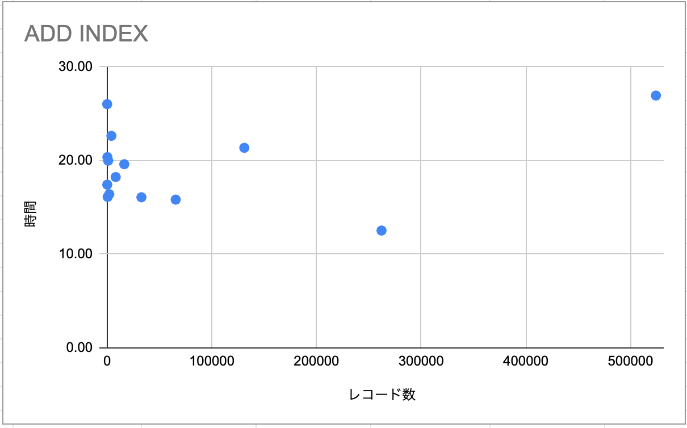

Query OK, xxx rows affected (x min x.xx sec) の時間を見ていますperformance_schema database を確認していますCREATE TABLE item
(
id INT PRIMARY KEY AUTO_INCREMENT,
num INT UNSIGNED,
str VARCHAR(30),
str2 VARCHAR(30),
str3 VARCHAR(30)
);
CREATE TABLE item_index
(
id INT PRIMARY KEY AUTO_INCREMENT,
num INT UNSIGNED,
str VARCHAR(30),
str2 VARCHAR(30),
str3 VARCHAR(30),
index (num),
index (str)
);
CREATE TABLE item_index_2
(
id INT PRIMARY KEY AUTO_INCREMENT,
num INT UNSIGNED,
str VARCHAR(30),
str2 VARCHAR(30),
str3 VARCHAR(30),
index (num),
index (str),
index (str2),
index (str3),
index (str, str2),
index (str, str3),
index (str2, str3),
index (str, str2, str3),
index (str, str3, str2),
index (str2, str, str3),
index (str2, str3, str),
index (str3, str2, str)
);


mysql> SELECT EVENT_ID,
-> TRUNCATE(TIMER_WAIT / 1000000000000, 6) AS Duration,
-> SQL_TEXT
-> FROM performance_schema.events_statements_history_long
-> WHERE SQL_TEXT = "select * from item where str like '%2%' and str2 like '%525%'";
+----------+----------+---------------------------------------------------------------+
| EVENT_ID | Duration | SQL_TEXT |
+----------+----------+---------------------------------------------------------------+
| 532 | 0.758868 | select * from item where str like '%2%' and str2 like '%525%' |
| 627 | 0.734291 | select * from item where str like '%2%' and str2 like '%525%' |
| 646 | 0.731736 | select * from item where str like '%2%' and str2 like '%525%' |
| 665 | 0.784295 | select * from item where str like '%2%' and str2 like '%525%' |
| 684 | 0.699200 | select * from item where str like '%2%' and str2 like '%525%' |
| 817 | 0.726403 | select * from item where str like '%2%' and str2 like '%525%' |
| 836 | 0.665074 | select * from item where str like '%2%' and str2 like '%525%' |
| 855 | 0.669399 | select * from item where str like '%2%' and str2 like '%525%' |
| 874 | 0.718087 | select * from item where str like '%2%' and str2 like '%525%' |
| 893 | 0.731762 | select * from item where str like '%2%' and str2 like '%525%' |
+----------+----------+---------------------------------------------------------------+
10 rows in set (0.00 sec)
→ 平均 0.7219115s
mysql> SELECT EVENT_ID,
-> TRUNCATE(TIMER_WAIT / 1000000000000, 6) AS Duration,
-> SQL_TEXT
-> FROM performance_schema.events_statements_history_long
-> WHERE SQL_TEXT = "select * from item where str2 like '%525%' and str like '%2%'";
+----------+----------+---------------------------------------------------------------+
| EVENT_ID | Duration | SQL_TEXT |
+----------+----------+---------------------------------------------------------------+
| 551 | 0.610941 | select * from item where str2 like '%525%' and str like '%2%' |
| 570 | 0.568627 | select * from item where str2 like '%525%' and str like '%2%' |
| 589 | 0.619817 | select * from item where str2 like '%525%' and str like '%2%' |
| 608 | 0.630084 | select * from item where str2 like '%525%' and str like '%2%' |
| 703 | 0.627935 | select * from item where str2 like '%525%' and str like '%2%' |
| 722 | 0.613024 | select * from item where str2 like '%525%' and str like '%2%' |
| 741 | 0.563686 | select * from item where str2 like '%525%' and str like '%2%' |
| 760 | 0.567389 | select * from item where str2 like '%525%' and str like '%2%' |
| 779 | 0.595388 | select * from item where str2 like '%525%' and str like '%2%' |
| 798 | 0.675684 | select * from item where str2 like '%525%' and str like '%2%' |
+----------+----------+---------------------------------------------------------------+
10 rows in set (0.01 sec)
→ 平均 0.6072575s
→このケースでは 15% 程度パフォーマンスが改善
後からインデックスを貼ったとき の時間を計測したかったわけだが、100万レコードから DELETE でレコードを減らしながら計測していったが、なぜか結果が以下のように。

比例しないものなんですかね？
不審に思い試しに6レコードしかない状態ですが SELECT * FROM item; をやってみると...
mysql> select * from item;
+---------+----------+--------------------------------+--------------------------------+--------------------------------+
| id | num | str | str2 | str3 |
+---------+----------+--------------------------------+--------------------------------+--------------------------------+
| 1310688 | 98135764 | 6bff0ca187f6a99c99daf21799282a | 4187a80d597ac9855519b8c1d90c2e | b40a8a182d9b7d67e0e3062ead701d |
| 1310689 | 10926723 | 01b18c93949530fe2e7d870f8aca24 | f80b962ec99c28c1d7a37c5af31786 | 4f80cc563c4e6ca7842692629b744f |
| 1310690 | 98869803 | 145d8de154d23367713cbdca066f7f | b77d25c46f0ad94b398c16614e4f75 | a1b28b4e59ffea131727eec6834281 |
| 1310691 | 27278484 | 80ac1361cbe1abd80bb31cdbf5e525 | 2ac1774a89828415501144a148c088 | e1ef45687fa3c80eed91e9363612a1 |
| 1310692 | 48066717 | d86bd1608477460813a76884f0456a | f6940106536b08dd3bf035ed769a4e | 507d17133d4913b2cc5b8f604bc9d9 |
| 1310693 | 77327447 | a130de047f9183a922cc3bc3f9fc26 | 0873044106d59a9b9fa89d712b0e09 | 4eb3b32e3845385b3054d8e92e4c4b |
+---------+----------+--------------------------------+--------------------------------+--------------------------------+
6 rows in set (32.40 sec)
＿人人人人人人人人人人人人人人人人人＿
＞ 6 rows in set (32.40 sec) ＜
￣Y^Y^Y^Y^Y^Y^Y^Y^Y^Y^Y^Y^Y^Y^Y￣
MySQL の InnoDB では、フラグメンテーション(断片化) が起こるとのこと。言われてみると、そうなるのが自然な気がしますね...
断片化のせいでパフォーマンスが極端に悪化していたものと推測。
ALTER TABLE テーブル名 ENGINE INNODB; で最適化できるとのことなのでやってみると、
mysql> select * from item;
+---------+----------+--------------------------------+--------------------------------+--------------------------------+
| id | num | str | str2 | str3 |
+---------+----------+--------------------------------+--------------------------------+--------------------------------+
| 1310688 | 98135764 | 6bff0ca187f6a99c99daf21799282a | 4187a80d597ac9855519b8c1d90c2e | b40a8a182d9b7d67e0e3062ead701d |
| 1310689 | 10926723 | 01b18c93949530fe2e7d870f8aca24 | f80b962ec99c28c1d7a37c5af31786 | 4f80cc563c4e6ca7842692629b744f |
| 1310690 | 98869803 | 145d8de154d23367713cbdca066f7f | b77d25c46f0ad94b398c16614e4f75 | a1b28b4e59ffea131727eec6834281 |
| 1310691 | 27278484 | 80ac1361cbe1abd80bb31cdbf5e525 | 2ac1774a89828415501144a148c088 | e1ef45687fa3c80eed91e9363612a1 |
| 1310692 | 48066717 | d86bd1608477460813a76884f0456a | f6940106536b08dd3bf035ed769a4e | 507d17133d4913b2cc5b8f604bc9d9 |
| 1310693 | 77327447 | a130de047f9183a922cc3bc3f9fc26 | 0873044106d59a9b9fa89d712b0e09 | 4eb3b32e3845385b3054d8e92e4c4b |
+---------+----------+--------------------------------+--------------------------------+--------------------------------+
6 rows in set (0.00 sec)
無事復活しました。
パーティションとか、他にも色々やりたかったのですが今回はやりきれませんでした。
また機会があればやろうとおもいます。